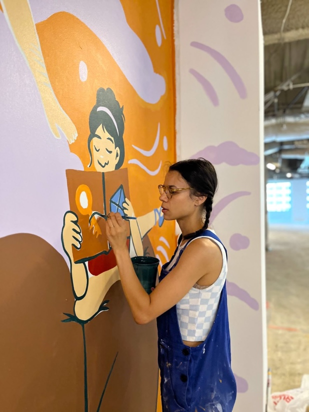
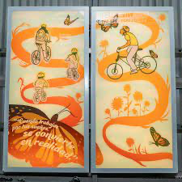
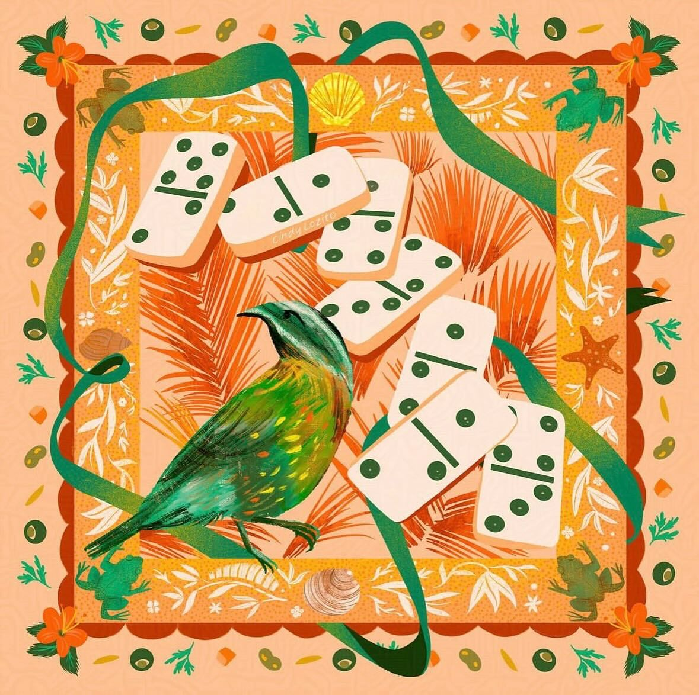
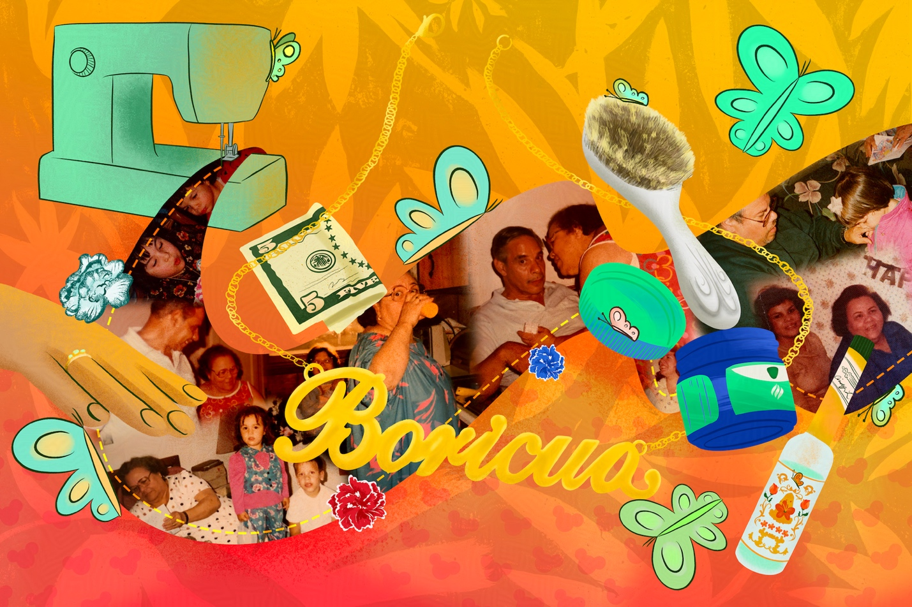
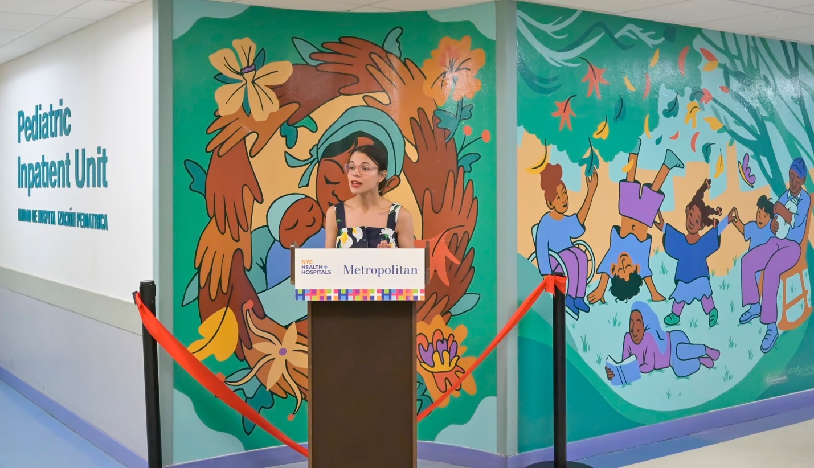

Discipline: A Study of Cindy Lozito, Artist
(Longer Profile Draft)
I. Sonic Palette
People who call themselves “artists” are spendthrift with their abilities to make others take notice. Look no further than our modern-day Hedda Hopper: rapper Azealia Banks was once considered to be the one to usurp Nicki Minaj with her rapid-fire venom; now, she wastes her special concoction on leveraging small notoriety for her turn at churning the rumor mill. What would become of her if other stories were miraculously clear of guile? What clout can she boast of her career given its severe deflation?
Self-fashioned and consistently productive, there’s an echelon of contemporary creative artists that boast total control over their professional livelihoods—and keep the lights on. Clear as a bell, such voices pierce through the smoke and trickery of the glamoured glitz and reach the ears of an unsuspecting audience with an aligned, authentic vision. Instead of relying on the artifice of a contrived narrative, small truths prevail in the midst of their artistic expression. Often discovered and celebrated, perhaps, sometimes, too quickly, hinders how well we process the greatness of their artistic statement.
There are others, still, who sustain a certain visibility, even in periods of artistic refinement and transformation. Success permits them to indulge in moments of self-reflection. The more some artists strive to become themselves, the more the public clamors for their new works. Yet even in this case, years of work gone unseen, ceaseless toil, and many, many moments of self-doubt are trounced too-soon by fabricated notions of “the overnight sensation.”
Janet Jackson’s breakthrough third album, Control (1986) and her retrospective Design of a Decade, 1986-1996 immediately come to mind. Neither Janet’s acting chops, nor her last name garnered her the platform she eventually found on her own, through her own creation. It was her sonic, visual, and spiritual choices as a creative that made her a darling of the public for several decades and allowed her creative freedom to blossom.
For me, Jackson’s cheery single from Design, “Runaway,” had always intimated itself as the farthest thing from strategic calculation and choreography, even in my childhood. I always understood the song’s feeling to suggest an unplanning of adult monotony, the unraveling of the tight hold we place upon ourselves, and the allowance of the unabashed fun of a whirlwind romance. Of course, productions like “Runaway” require the artist to perform their work—the finely appointed and color coordination of Cindy Lozito’s wedding ceremonies and displays were no exception. The faint baby blue colored accented scarves of silk, the blue and orange self-designed invitation and thank you notes, the curated table arrangements, and that baby blue rotary phone that lives rent-free in my mind, a phone re-engineered to allow guests only to leave the newlyweds a good luck message—each element appeared seamless to me and a clear sign that the affair took as much of Cindy’s time and careful attention like the results of her artistry in Philadelphia. Perhaps like Jackson’s popular single, Cindy’s wedding was one of several highlights that signaled an arrival, a celebration, and a moment of reflection. After all, her journey so far was also ten years in the making.
With Jackson’s “Runaway” and Cindy’s wedding in mind, I thought it indeed right and salutary that I named a previous, admittedly top-heavy profile on Cindy Lozito after Janet’s Design of a Decade (1995). Knowing Cindy for a decade and a half, and in speaking in light of the overnight narrative, I dedicated the adventure of profiling her to tell her origin story: the Latina kid from Queens and Christ the King High School who heeded tremendous lessons while gaining informative experience in her journey to life as an artist in Philadelphia. “Cindy Lozito, Design of a Decade 2014-2024”, though well-intentioned, was notably incomplete. This second piece, named “Cindy Lozito: Discipline,” pays proper attention to the development of Cindy’s artistry, her tenacity in her ability to marshal all she is into the creation of vivid, imaginative, inviting pieces, and an invitation posed by the foundation of her art. Knowing Cindy and what she’s experienced, her work carries deeper meaning for me because I see her work inspired by her life, whether it’s a comic, a display, or a large mural. It became very important to me, with Design, to detail her narrative of challenge, struggle, and grit.
In searching for inspiration for “Discipline” as a deeper look into Cindy’s artwork, artistic practices, and beliefs, I returned to our hours long interview in October at my studio apartment. During the last hour of footage, Cindy curated a Spotify Playlist with me. Strangely enough, shortly after our interview, I shuffled the track listing and added four songs I thought Cindy would approve of, fattening the playlist time to a healthy hour and a half, to then be recorded onto a faulty, 90-minute Maxell XLII cassette that I intended to give her for her birthday (Only the real ones know). Instead, it sat next to my stereo for weeks. I played the warped tape to revisit Cindy’s sonic palette for this piece, and the musical tea leaves made so much sense.
The cassette played its first tracks: “Welcome to My Island” by Caroline Polachek, “Sympathy is a Knife” by Charli XCX, and Chappell Roan’s “Pink Pony Club.” I became astonished. These musical signposts, along with Janet’s Design, were absolutely no fluke. Like Cindy, these artists also endeavored through periods of longsuffering and toil. When acclaim came, these artists were improperly exposed to the notion of overnight discovery, immediate sensation, and fame. Not only did Cindy choose songs that she enjoyed this season, but she also chose artists that intimately understood the experience of working without recognition for a time, only to confront a sudden onslaught of praise.
Of course, none of the artists mentioned here, save for maybe Ms. Banks, would ever cite ingratitude for praise. But my sense about artists of Cindy’s caliber is that they are due the welcome of a hero’s return from an odyssey of self-discovery and self-possession, two integral ingredients that directly decides how their art connects. However, that’s not our media.
Several songs Cindy selected represented her youth, such as the chorded enchantment of Alicia Keys’ “You Don’t Know My Name,” and her time in college: Marina’s “Starring Role” stood out as a shared staple from playlists in undergrad: back when Cindy took Art History seriously, when I grappled with Political Philosophy, and Marina counted us both as two of her many diamonds. The friend who welcomed me to Philly by furnishing a circular rug upon which my feet rest at the current moment, I count Cindy as one of my musical tastemakers (but she doesn’t know that). She made sure to include the wayfaring, wistful “Voyager” from Birdy’s Young Heart album, an ode to falling leaves and guitar-led separation. Their themes of womanhood and agency create a sonic image of her personality and taste; she is the one leads the creation of sentimental possibilities, the one who refuses to merely support, and the one who prefers to traverse the world unfettered. These come time mind as I render an image of Cindy’s from her choices in popular music.
By asking her to select her favorites in October, I’d venture that engaging with Cindy this way at that moment was well-timed; it finds her brimming with future possibility while reaffirming a faithful statement to herself: to continue to be unsurprisingly vivid, funky, and cool. Curated by the ear of an artist with an eye for poignant sentimentality, Cindy’s mixtape reflects who she is at her core: an eclectic capable of stoking the imagination’s desires for connection, family and community. This investigation into her sonic, visual, and spiritual palettes, her sense of creation, and her process warmly invites new audiences to think of how art lends itself as to the care of communities but intently challenges the idea of Cindy’s artistic success as “overnight.” Following the narrative I detailed in “Design of a Decade 2014-2024,” I find Cindy Lozito, muralist, public artist, and designer, ready to be continued to be seen, ready to be continued to be heard, and always prepared to have it all.
II. Visual Palette
Popular culture has reached a point of saturation where the very mention of an “era” seldom goes far without invoking the name “Taylor Swift” and her famed tour. Now that that’s accomplished, it is useful to think of Cindy Lozito’s recent achievements, milestones, and artistic hallmarks as also belonging to a thematic era, whose name is as important as what it represents. For now, I nominate Janet Jackson’s Discipline (2008) as a work that can emphasize Cindy’s current effort and artistry. A deliberate name, prevailing idea, and concept, Discipline possesses the cache and definition needed to bound the artist’s thoughts and deeds within her current era, when early sketches evolved and appeared as part of a completed piece and changed even further in promotion and advertisement. Organized yet fun, the artist keeps keen focus on locating cohesive elements among several works completed within the same season—all capable of standing alone. When taken together this season, however, her offerings make a formative statement on temporality, resilience, and community.
As part of her practice, Cindy venerates the recurrence of symbolic meaning in her work, such as the presence of the butterfly:
When I'm creating murals for a community or organization, I like to think of my work as either representing or inspiring imagination within that group. Butterflies have shown up a lot in my work during this season in my career, and I've used them as symbols of hope, wonder, and temporality.
Elegantly, Cindy evokes the strength of a butterfly as a defining inspiration during her Discipline era. Her rendering refashions how the popular trope is seen; where convention usually associates the butterfly with narratives of transformation and freedom, Cindy meditates instead on feeling the hope that freedom inspires, spurred by a wonder of the unknown, especially the experience of internal growth. Given Cindy’s own experiences of hope, exploration, and constant change, she needs no rationale for citing the butterfly so meaningfully.
Butterflies abound in Cindy’s works but is celebrated in three distinct appearances this era. The first, an homage to the monarch butterfly, is an orange light box adorned with several flittering monarchs, the largest of which carries the message, “Cuando trabajas a tus sueňos, se convierte en realidad”—roughly meaning, “When you work on your dreams, they come true.” The work is more than a beacon of warm, orange light: it tells an integral part of the origin story of Mexibike, the bicycle shop in South Philadelphia and its owner, Maria, a woman who emigrated with her family from Puebla, Mexico. Maria expressed her hardships and difficulties to Cindy in interviews but persisted in hope. Cindy later recalled, “[Maria] sees the shop as an avenue for hope and prosperity for her children as they grow.”
Offset by black, browns, and shades of yellow, the striking light box is pleasantly reminiscent of drinking Tang at home after school and shows a clear throughline from Maria’s life experience to showcasing her determination to overcome hardship. By featuring Maria’s serious hope wrapped in the ruse of large, expansive, free butterfly wings, Cindy’s creation lingered in my mind as the light box’s arresting glow proved itself worthy of my lengthening gaze.
A large blue and indigo butterfly with anthropomorphic eyes piques child-like curiosity in “Between the Trees,” a mural commissioned this year for the (PMA) of Art’s group show, “Metamorphosis: Celebrating Creativity and Growth” (2024). Inspired by the feeling brought on by the dawn of Spring, Cindy explains that the butterfly represents “the way we all become attuned to colors and shapes in our environment when winter finally shakes away.” Featuring the butterfly as a leader to others, Cindy captures how nature commands us to behold, its beauty and mystery, specifically in the wondering mind of a child. Not only does the butterfly promote a calming effect in “Between the Trees,” Cindy’s character selection beautifully sings the song of diversity. As someone with curly hair, I feel very seen by Cindy’s hair-painting techniques, and am called to pay greater attention to nature’s mystery.
The last invocation of the butterfly arrived as part of the PMA’s Hispanic & Latinx Heritage month exhibition. Cindy’s arresting contribution, The Fabric of Belonging (pictured left), employs harmonious greens and oranges to create an exquisite bandana with corners of coqui tree frogs and small but mighty resting, orange butterflies. In the accompanying giveaway piece (below), Cindy features several topaz and aquamarine butterflies as “guardians resting on the border of a fabric-shaped collage showing photos of my Puerto Rican family members, many of whom have passed away and whom I honored through the piece.” As an exploration of Puerto Rican identity through kitsch, symbolism, and bright colors, Cindy’s collaboration with PMA honored her grandmother’s work as a seamstress, incorporated family photos and showcased colloquial staples of Latinidad, such as the Boricua necklace, Agua de Florida (Florida Water) and Vick’s Vapor Rub.
I get the impression that these three glimpses into Cindy Lozito’s artistry suggest much more than a predilection to butterfly imagery or the tendency to incorporate variations on orange (which also happens to pop on Cindy’s website, cindylozito.com). The butterflies summoned for the Mexibike light box, “Between the Trees” and The Fabric of Belonging reinforce the expression and presence of Cindy’s interiority as a Latinx woman, a talented artist, a kind altruist and an ambitious creator intent on becoming herself through the creation of her art. Self-expression and self-possession; given Cindy’s journey, this should never be taken for granted.
III. Spiritual Palette
I return to calling these this era Cindy’s Discipline as a useful way to preserve the highlights of Cindy’s season, to (un)officially recognize the start, the end, as well as the distinct flavor of the creative energies that made her success possible. Like Janet in 2008, Cindy in 2024 continued to pay homage to her identity and style even when it may not have been in vogue. The crisp, funky, and deceptively light production on Discipline (2008) created a vibe that invited diverse audiences to feel and to move. Cindy’s artistry—elevated further by her idiosyncratic style—makes audiences feel and fawn as well. Her kinships with butterflies, the visual palette of orange—a color that emblemizes optimism, happiness, creativity, warmth, energy, enthusiasm, as well as success, willpower, independence, achievement, determination, freedom, and health—contains the same power that Janet yields in her iconic choreography: both artists strive continually to recognize their artistic genius.
Always armed with dedication and tenacity, Cindy Lozito now boasts a robust portfolio that can certainly speak for itself. From her days in her freelancer-corporate era (c. 2017) Cindy’s work at Health Union flourished; during that time, she created five to nine illustrations weekly, refining the talents and skills she amassed from her earlier days as part of Art Girl Army, a post-college creative salon. She leveraged her skills to illustrate multiple articles for The Washington Post, the New York Times, the LA Times, and completed her first murals at the Philadelphia Flower Show (2022) and close by her South Philadelphia home in 2023. Sharing the mural making process in the name of reciprocity, Cindy allowed the community to join the creation process of “Seasons of Reciprocity,” a commission for Metropolitan Hospital’s “Arts in Medicine Campaign” in New York. Scenes from the event saw Cindy marshaling music, donorship, public and private entities under the auspices of her art. A decade in the making, Cindy’s artistry continues to astonish Philadelphia’s art world with humility and aplomb.
There isn’t a winning formula to success as an artist today. However, I am sure the secret to Cindy’s success lies in her mastery of the carefully coiffed seemingly effortless promotional campaign—the very stuff of an upcoming or a celebrated era. To properly entice audiences and patrons alike via an advertising blitzkrieg, the artist must commit to setting and meeting deadlines, promoting themselves, establishing and maintaining connections, appearing in public, performing with hopes to channel the zeitgeist, engaging with the press; it is, of course, work!
Unlike many artists and celebrities who possess a slimy film of narcissism in their engagement with us common folk, Cindy relies upon a bedrock raison d’etre that needs others (her audience, her patrons, her students) to articulate her vision and keep her grounded. In between seeing Wicked, concluding her season, and the commencement of the holidays, she shared the following:
If someone recognizes themselves through my art in a flower that grew in their home country or a motif that reminded them of something from childhood, it feels like forging a bridge of belonging for us both. Whether I'm creating art for murals, online illustrations, books, or other outlets somewhere down the line, I hope to always foster this type of connection through my work.
Cindy’s tender commitment to forging bridges of belonging is central to who she is as an artist and individual. In making others feel seen, in allowing for audience reciprocity, and in following the yearn of her internal transience, she keeps humble and eager without compromising her leadership and creativity or using her talents for selfish reasons. (We’re looking at you, Azealia.)
With a sonic palette that aligns with catharsis and taste, and a visual palette that is a conduit for healing and community, Cindy lives a life that is spiritually aligned with her intentions. Further supported by doting husband Nick and the cutest dog ever, Percy, Cindy lives her truth successfully as an artist and a creative, something that not everyone has.
Though misguided, the recent clamor for Cindy this season is well-deserved, as she is someone whose already lived through several eras, who invested herself into becoming a productive powerhouse with an uncanny panache for organization. While it is glamorous witnessing a beautiful unfolding in Cindy’s positive reception this year, it would be remiss of me not to pay attention to detail of her origin story and the evolution of her art. After all, she is an artist who in articulating her vision, consults each stakeholder as they pour their perspective into her mixture, from which she brews universal themes in spectacular hues.
All photos reproduced with the permission of the artist herself. (Plug in Cindy’s Social Media and Professional website here in italics.)




